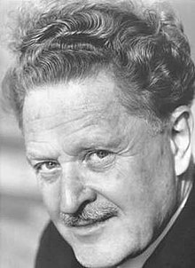

Nâzım Hikmet[1902-1963] (Mehmed Nâzım Ran)
"Cần phải treo cổ con người này, và để sau đó than khóc trên ngôi mộ ông”. Câu thơ huyền thoại đó, đôi khi được gán cho là của Ataturk, đã tóm tắt đầy đủ về thái độ của nhà nước Thổ đối với Nazim Hikmet [1902-1963] nhà thơ lớn nhất của Thổ Nhĩ Kỳ trong thế kỷ XX. Họ gạt bỏ tư tưởng của ông nhưng lại chào đón tài năng ông!
Biển đẹp nhấtLà biển người ta chưa hề tới
Trẻ em đẹp nhất
Vẫn chưa lớn khôn
Những ngày đẹp nhất của chúng ta
Là những ngày ta chưa được sống
Và điều tôi muốn nói với anh
Về những gì đẹp nhất
Chính là điều tôi chưa từng nói với anh.
Được thừa nhận khắp nơi như là một nhà thơ lớn của thế giới, và được dịch ra 60 thứ tiếng, Nazim Hikmet, đối với những phần tử nào đó, vẫn là một nhà thơ bị nguyền rủa.
Ngày 24-2-1993, tòa án tối cao Ankara lại một lần nữa từ chối khôi phục các quyền công dân đã tước đi của Nazim Hikmet vào năm 1951. Zulfre Livaneli, ca sĩ, nhà soạn nhạc kiêm điện ảnh đã nhận xét: “Mặc dù sự sụp đổ của Liên Xô, một số người vẫn còn mang những cảm nghĩ rất dữ dằn, một dị ứng đối với phái tả”.
Sinh ra trong một gia đình tư sản của đế chế Ottoman, Nazim đã xuất bản những vần thơ đầu tiên vào tuổi 17. Ở Moskva, nơi ông theo học từ những năm đầu của thập niên 20, ông đã chấp nhận tư tưởng cộng sản. Guengoer Dilmen, tác giả nhiều tác phẩm sân khấu và là một kẻ nhiệt thành ngưỡng mộ nhà thơ, đã nói: “Nazim là người theo chủ nghĩa lý tưởng, một nhà nhân văn chủ nghĩa, người tin tưởng một cách chân thành vào sự bình đẳng và tình huynh đệ mà chủ nghĩa xã hội đã hứa hẹn”.
Mười ba năm tù ngục
Thổ Nhĩ Kỳ là một đất nước của những nghịch lý và mâu thuẫn. Trường hợp “con người có cặp mắt xanh xanh” này, như ông thích miêu tả về mình, là một thí dụ nổi bật. Con người này, bị kết án là đã bỏ trốn sang Liên Xô, cũng là một người yêu nước thường ca ngợi Tổ quốc trong những vần thơ của mình.
Đất nước ấy giống như đầu tuấn mãĐi nước kiệu từ châu Á xa xôi,
Để rồi dầm mình trong
Địa Trung Hải
Đất nước ấy là xứ sở của tôi…
Lãng mạn, yêu say đắm, Nazim Hikmet đã làm say lòng bao phụ nữ, bị thu hút bởi sự tỏa sáng diệu kỳ, mớ tóc phủ gáy lượn sóng và cặp mắt xanh. Piraye là người vợ trong những năm dài ông bị tù đày, Munewer, bạn đời của những ngày cuối cùng ở Thổ và mẹ của cậu bé Memet, và Vera, người chia sẽ cuộc đời với ông ở Moskva cho đến khi ông qua đời năm 1963; đấy là những nữ thần thi ca đã tạo cảm hứng cho những vần thơ nhức nhối của ông.
Việc ông trở về Thổ Nhĩ Kỳ năm 1924 đánh dấu những bất hòa đầu tiên của ông với quyền lực chính trị, tiếp theo là nhiều đợt ngồi tù. Năm 1938, ông bị kết án 20 năm tù vì đã xúi giục lực lượng quân đội nổi loạn, một bản án không có cơ sở đã làm ông phải sống 13 năm sau chấn song tù.
Cuộc chiến tranh vì độc lập của Thổ Nhĩ Kỳ đã tạo cảm hứng cho một khúc sử thi dài của ông. Trong một nền Cộng hòa Thổ Nhĩ Kỳ trẻ tuổi, Nazim Hikmet “thuộc về một truyền thống mới do nhà thơ Ataturk khai sinh”, Guengoer Dilmen nói thế. “Ông đã phá vỡ những quy tắc cứng nhắc của nền thơ Thổ cũ và tạo ra những vần thơ tự do”.
Giống hệt như Ataturk, người mà ông khâm phục, Nazim Hikmet rõ ràng là một nhà thơ hiện đại và hướng về văn học phương Tây, nhưng chất nổi loạn của ông phản kháng lại mọi hình thức của nền chính trị cực quyền.
Ở trong tù, thơ ông được làm giàu bởi môi trường vùng Anatolie, có dịp gặp gỡ nông dân và những người lao động khác cũng bị giam giữ với ông. Những bức thư từ ngôi nhà tù Bursa, Từ hy vọng đến phải khóc vì phẫn nộ là những vần thơ đầy cảm động, thể hiện một con người đầy chất trào lộng, đôi khi tuyệt vọng, nhưng luôn luôn quan tâm đến người khác. Những nhà văn trẻ, cùng ở tù như ông, đã trưởng thành dưới ảnh hưởng của ông.
Cuộc đào thoát huyền bí
Sau một cuộc nhịn ăn để phản đối lại chính phủ mới về việc bãi bỏ lệnh đặc xá, Nazim Hikmet đã được trả tự do năm 1950. Đến đâu cũng bị khủng bố, ông đã phải chọn một quyết định bất đắc dĩ – rời bỏ đất nước. Sau này, Refik Erduran, người anh rể của ông, kể lại: “Tình hình thật là kỳ quái, bởi vì Nazim là một con người lễ độ, hoàn toàn không gây sự với ai, có một khiếu hài hước lớn. Thế nhưng, ngôi nhà lúc nào cũng bị cảnh sát bao vây”. Suốt 20 năm trời, Erduran đã không hề hé miệng về việc ông tham dự vào chuyến chạy trốn khó tin của Nazim Hikmet. Ông đã lái chiếc ca-nô chở Hikmet đến Hắc Hải và sau đó lên chiếc tàu thủy của Rumani. “Đứng trên boong tàu, Hikmet bảo tôi: Đi với tôi đi, và mắt ứa lệ”. Theo lời khuyên của Hikmet, sau này Erduran đã đi vào văn học.
Là con một thế gia, vượt ra mọi sự ngờ vực, Erduran đã không hề bị cảnh sát tra vấn và vì thế sự đào thoát của Nazim đối với cảnh sát vẫn là một bí ẩn không mò ra được.
Những năm vừa qua, ở Thổ Nhĩ Kỳ có một làn sóng đòi phục hồi chính thức cho nhà thơ. Với sáng kiến của người chị, bà Samiye Yaltirim, một tổ chức được thành lập năm 1991: Hội bảo trợ Nghệ thuật và Văn hóa Nazim Hikmet, mà mục tiêu hàng đầu là khôi phục lại quốc tịch Thổ cho nhà thơ sau khi ông mất. Nếu cần, hội sẽ sẵn sàng kiện đến tòa án châu Âu về quyền con người để đạt được mục tiêu này.
“Nazim đã có mặt trong chúng ta”
Nhưng hội này còn muốn mình mở một trung tâm để bảo tồn những thư tịch và vật dụng cá nhân của nhà thơ. Kiymet Coskun, tổng thư ký hội nói: “Chúng tôi muốn bất cứ ai cũng tiếp cận được với những kỷ vật của Nazim Hikmet”. Sự tài trợ của nhà nước là thiết yếu để có một nguồn quỹ cần thiết cho công việc này. Bộ trưởng văn hóa Fikrì Saglar đã ủng hộ những nỗ lực của hội, nhưng quyền lực ông lại bị hạn chế trước sự chống đối của một nhóm cánh hữu mà chính phủ không muốn đụng chạm đến, nhưng trên hết là đứng trước sức ỳ của bộ máy quyền lực quan liêu.
“Khôi phục hay không, vấn đề không tự đặt ra. Nó đã trở thành hiện thực”. Goengoer Dilmen, tác giả nhiều tác phẩm sân khấu và là kẻ ngưỡng mộ nhiệt thành nhà thơ đã tuyên bố vậy. “Nazim đã có mặt trong chúng ta, chỉ còn thiếu một vài thủ tục pháp lý thôi”.
Những bài thơ của ông, bị cấm bao nhiêu năm, khi ông còn sinh thời và trong những thời kỳ của chính quyền quân sự, đã không ngừng phổ biến khắp đất nước, người ta rỉ tai đọc cho nhau nghe hay đọc trước công chúng bởi những trí thức dũng cảm. Từ những năm 60, những tập sách của ông lại tái hiện trong những thư viện Thổ và từ năm 1978, Zulfu Livaneli đã xuất bản album ca khúc đầu tiên lấy cảm hứng từ những bài thơ của Nazim và đã hát chúng trên đài truyền hình nhà nước. Sau vụ đảo chính năm 1980 Livaneli bị cấm. Ông nói: “Nhưng những bài hát lại còn thành công hơn trong vòng bí mật”.
Bây giờ các nhà hát quốc gia đã dựng nhiều vở kịch của Nazim Hikmet và đài truyền hình chính thức đã làm một bộ phim từ một trong các tác phẩm đó. Thực tế Nazim Hikmet nổi tiếng ở Thổ đến nỗi một số người đã nói rằng ông có thể “phục vụ cho mọi khẩu vị”. Cả nhóm nhạc Rap Vitamine cũng nhắc đến ông trong những album vừa rồi của họ.
“Lưu đày là một nghề nhọc nhằn, hết sức nhọc nhằn”
Để hoàn tất việc khôi phục lại ông trên tổ quốc mình, chỉ còn phải chờ con dấu chính thức nữa mà thôi. Điều này sẽ cho phép các tác phẩm của ông – vốn đã được các giáo sư tại các trường đại học dịch sẵn – chính thức được đưa vào giáo trình của nhà trường. Không ai còn nghi ngờ việc chính phủ Thổ sẽ không thừa nhận và hoan nghênh Nazim Hikmet với tài năng ông: Một trong những nghệ sĩ vĩ đại nhất mà nước này đã sản sinh ra. Nhưng chẳng ai lại liều lĩnh dự đoán trước cái ngày sẽ đến đó, bởi vì những thí dụ về luật pháp và những quyết định của nhà nước thường chậm trễ hơn sự phát triển xã hội. Nazim cũng không thoát ra khỏi ngoài những nghịch lý ấy. Sự chống đối của ông đối với sự độc tài dưới mọi hình thức buộc ông phải “trả giá”.
Những bài thơ trong những năm cuối đời của ông thấm đẫm nỗi niềm sầu xứ. Ông than lên: “Lưu đày là một nghề nhọc nhằn, hết sức nhọc nhằn”. “Nguyện ước cuối cùng và di chúc” của ông đã được nói lên khi bị bệnh tim tại một bệnh viện ở Moskva. Đó là được “chôn cất trong nghĩa trang của một làng quê vùng Anatolie”, dưới bóng một cây tiêu huyền.